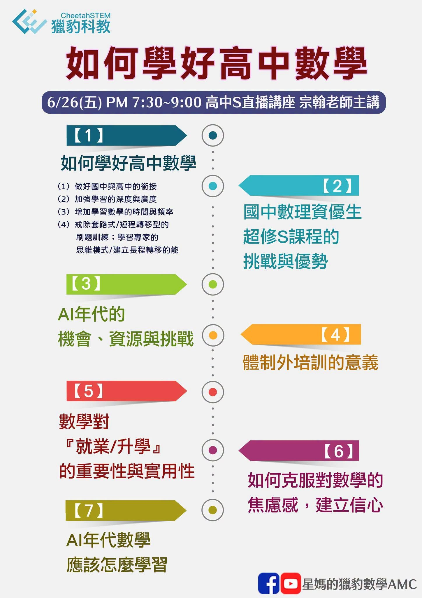

超修生 資優生 都需要一個優質的網路課程
▶️6/26(五) PM 7:30~9:00 高中S直播講座 宗翰老師主講
相較於國中，高中數學不但在知識量大幅地增加，內容更抽象、觀念更深入且題型變化多端。
如何在有限的時間內，讓同學獲得良好的學習成效、優異的成績？
如何以最有效率的方式作加深加廣的學習，在未來的升學考試中（學測、二階、分科）取得傲人的成績？
6/26(五) PM 7:30 給高一新鮮人的學習建議～宗翰老師
參加方式:
『2026/07 獵豹S101高一(上)、S111高二(上)、S12N高三』課程 開跑!』
